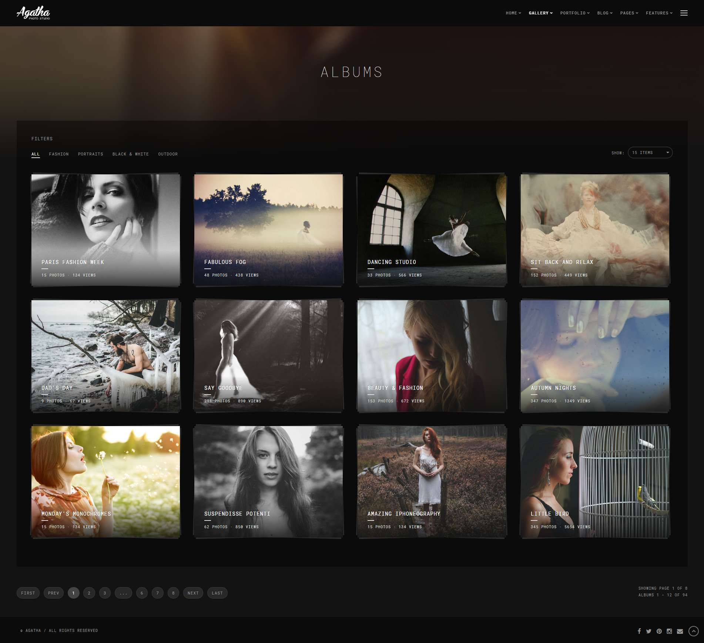
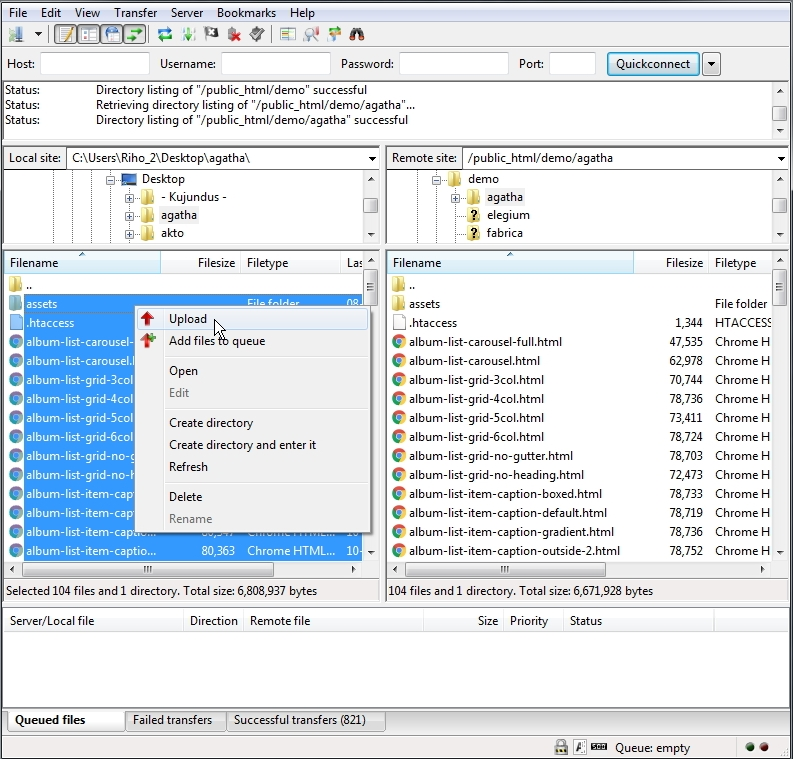

Thank you for purchasing this template. :)

This template based on Bootstrap Framework. Bootstrap is the most popular HTML, CSS, and JS framework for developing responsive, mobile first projects on the web. More information: http://getbootstrap.com
This template requires that you are familiar with at least HTML and CSS. If you are not familiar with HTML and CSS, I highly recommend that you to hire a specialist. It will save your time and you will get only positive emotions while using this product.
It is also required that you are familiar with Bootstrap. If not, then it is strongly recommended that you will familiarize yourself with how the Bootstrap works before you begin to customize this template.
Agatha - is a simple HTML template. HTML is static, this means no dynamic features (no PHP and MySQL). This template is just a good starting point if you want to create your own web site contains mainly the design elements you can use.
* Some parts may not work properly in your local computer. Upload template to your web server in order to function properly.
All template files are located in folder named "UPLOAD".
+-- agatha / +-- assets / ¦ +-- css / ¦ ¦ +-- custom.css (your custom CSS here) ¦ ¦ +-- dark-style.css (template dark style) ¦ ¦ +-- helper.css (helper CSS classes) ¦ ¦ +-- theme.css (template master CSS) ¦ +-- img / ¦ ¦ +-- ...all images used ¦ +-- js / ¦ ¦ +-- custom.js (your custom JS here) ¦ ¦ +-- theme.js (template JS) ¦ +-- vendor / ¦ ¦ +-- bootstrap (all Bootstrap files) ¦ ¦ +-- ...all external scripts/plugins ¦ +-- favicon.ico +-- mail.php +-- index.html +-- album-list-carousel.html +-- album-list-carousel-full.html +-- ...all .html files
Simply upload all template files (can be found in "UPLOAD" folder) to your server using your favorite FTP client (I recommend FileZilla). Once uploaded, point your browser to your site URL and you are done. No any hocus-pocus. :)

This template based on Bootstrap Framework. Bootstrap is the most popular HTML, CSS, and JS framework for developing responsive, mobile first projects on the web. More information: http://getbootstrap.com
<div class="row">
<div class="col-md-8">.col-md-8</div>
<div class="col-md-4">.col-md-4</div>
</div>
<div class="row">
<div class="col-md-4">.col-md-4</div>
<div class="col-md-4">.col-md-4</div>
<div class="col-md-4">.col-md-4</div>
</div>
<div class="row">
<div class="col-md-6">.col-md-6</div>
<div class="col-md-6">.col-md-6</div>
</div>
More information about Bootstrap grid system: http://getbootstrap.com/css/#grid
<!-- Pegin page preloader --> <div id="preloader"> <div class="pulse bg-main"></div> </div> <!-- End page preloader --> <!-- =================== ///// Begin header ///// ======================== * Use class "show-hide-on-scroll" to hide header on scroll down and show on scroll up. * Use class "fixed-top" to set header to fixed position. --> <header id="header" class="fixed-top"> <div class="header-inner"> <!-- Begin logo --> <div id="logo"> <a href="index.html" class="logo-dark"><img src="assets/img/logo-dark.png" alt="logo"></a> <a href="index.html" class="logo-light"><img src="assets/img/logo-light.png" alt="logo"></a> </div> <!-- End logo --> <!-- Begin header tools --> <div class="header-tools"> <ul> <li> <!-- off-canvas menu trigger (menu button) --> <a id="cd-menu-trigger" href="#0"><span class="cd-menu-icon"></span>menu</a> </li> </ul> </div> <!-- End header tools --> <!-- Begin menu (Bootstrap navbar) =================================== * Use class "navbar-default" or "navbar-border-bottom" for navbar style. --> <nav class="navbar navbar-default"> <div class="navbar-inner"> <!-- Toggle for better mobile display --> <div class="navbar-header"> <button type="button" class="navbar-toggle collapsed" data-toggle="collapse" data-target="#navbar-collapse-1" aria-expanded="false"> <span class="sr-only">Toggle navigation</span> <span class="icon-bar"></span> <span class="icon-bar"></span> <span class="icon-bar"></span> </button> </div> <!-- /.navbar-header --> <!-- Collect the nav links, forms, and other content for toggling --> <div class="collapse navbar-collapse" id="navbar-collapse-1"> <ul class="nav navbar-nav navbar-right"> <li class="active"><a href="your-page-1.html">Link 1</a></li> <li><a href="your-page-2.html">Link 2</a></li> <li><a href="your-page-3.html">Link 3</a></li> <li><a href="your-page-4.html">Link 4</a></li> <!-- Begin dropdown ============================== * Use class "dropdown-hover" to make navigation toggle on desktop hover. * Use class "dropdown-menu-right" to right align the dropdown menu. * Use class "dropdown-menu-dark" to enable dark dropdown menu. --> <li class="dropdown dropdown-hover"> <a href="#0" class="dropdown-toggle" data-toggle="dropdown" aria-haspopup="true" aria-expanded="false">Dropdown <span class="caret-2"><i class="fa fa-chevron-down"></i></span></a> <ul class="dropdown-menu"> <li><a href="your-page-1.html">Dropdown link 1</a></li> <li><a href="your-page-2.html">Dropdown link 2</a></li> <!-- Begin dropdown (submenu) ============================== * Use class "dropdown-hover" to make navigation toggle on desktop hover. * Use class "dropdown-menu-dark" to enable dark dropdown menu. --> <li class="dropdown dropdown-submenu dropdown-hover"> <a href="#0" class="dropdown-toggle keep-inside-screen" data-toggle="dropdown" aria-haspopup="true" aria-expanded="false">Dropdown Submenu <span class="caret-2"><i class="fa fa-chevron-right"></i></span></a> <ul class="dropdown-menu"> <li><a href="your-page-1.html">Submenu link 1</a></li> <li><a href="your-page-2.html">Submenu link 2</a></li> <li><a href="your-page-3.html">Submenu link 3</a></li> </ul> </li> <!-- End dropdown --> <li><a href="your-page-3.html">Dropdown link 3</a></li> <li><a href="your-page-4.html">Dropdown link 4</a></li> <li><a href="your-page-5.html">Dropdown link 5</a></li> </ul> </li> <!-- End dropdown --> <li><a href="your-page-5.html">Link 5</a></li> <li><a href="your-page-6.html">Link 6</a></li> </ul> <!-- /.nav --> </div> <!-- /.navbar-collapse --> </div> <!-- /.navbar-inner --> </nav> <!-- End menu --> </div> <!-- /.header-inner --> </header> <!-- End header --> <!-- ================================================================================================== ///// Begin off-canvas menu (more info: http://codyhouse.co/gem/secondary-expandable-navigation/) ///// =================================================================================================== --> <nav id="cd-lateral-nav"> <div class="nav-inner"> <!-- Menu header --> <div class="menu-header">Extra Stuff</div> <!-- Begin nav links ===================== --> <ul class="cd-navigation"> <li><a class="link" href="your-page-1.html">Link 1</a></li> <li><a class="link" href="your-page-2.html">Link 2</a></li> <li><a class="link" href="your-page-3.html">Link 3</a></li> <!-- Begin submenu --> <li class="item-has-children"> <a href="#0">Submenu<span class="caret-2"><i class="fa fa-chevron-down"></i></span></a> <ul class="sub-menu"> <li><a class="link" href="#">Sub Link 1</a></li> <li><a class="link" href="#">Sub Link 2</a></li> <li><a class="link" href="#">Sub Link 3</a></li> </ul> </li> <!-- End submenu --> <li class="cd-menu-separator"></li> </ul> <!-- End nav links --> <!-- Begin nav content box --> <div class="cd-content-box margin-top-20"> Nav content box content here... </div> <!-- End nav content box --> </div> <!-- /.nav-inner --> </nav> <!-- End off-canvas menu --> <!-- ============================== /////// Begin body content /////// =============================== --> <div id="body-content"> <!-- ================================ ///// Begin page header section ///// ================================= --> <section id="page-header-secion"> <!-- Begin page header image =============================== * Use class "parallax" to enable parallax effect. --> <div class="page-header-image parallax bg-image" style="background-image: url(your-backgroun-image.jpg); background-position: 50% 50%;"></div> <!-- End page header image --> <!-- Element cover --> <div class="cover page-header-cover"></div> <!-- Begin page header info --> <div class="container-fluid page-header-content no-padding"> <div class="row"> <div class="col-md-12"> Page header content here... </div> <!-- /.col --> </div> <!-- /.row --> </div> <!-- End page header info --> </section> <!-- End page header section --> <!-- ============================ ///// Begin content section ///// ============================= --> <section id="content-section"> <div class="container-fluid"> <div class="row"> <div class="col-md-12"> <!-- Begin content wrap --> <div class="content-wrap min-height-600"> Your page content here... </div> <!-- End content wrap --> </div> <!-- /.col --> </div> <!-- /.row --> </div> <!-- /.container --> </section> <!-- End content section --> <!-- Begin footer --> <footer id="footer"> <div class="footer-inner"> <div class="container-fluid"> <div class="row"> <div class="col-sm-6"> <div class="copyright"> Footer left column content here... </div> </div> <!-- /.col --> <div class="col-sm-6 text-right"> Footer right column content here... </div> <!-- /.col --> </div> <!-- /.row --> </div> <!-- /.container --> </div> <!-- /.footer-inner --> </footer> <!-- End footer --> </div> <!-- End body content --> <!-- Scroll to top button --> <a href="#body" class="scrolltotop sm-scroll"><i class="fa fa-chevron-up"></i></a>
jQuery - is a fast, small, and feature-rich JavaScript library. It makes things like HTML document traversal and manipulation, event handling, animation, and Ajax much simpler with an easy-to-use API that works across a multitude of browsers. With a combination of versatility and extensibility, jQuery has changed the way that millions of people write JavaScript. For more information: http://www.jquery.com
Note: The initialization of the elements, libs and features is made by the file named "theme.js" which is located in the folder named "js".
This template contains some extra prepared helper classes you can use. All helper classes are located in the file "helper.css". You are free to use these classes to customize your web site.
This template contains two color styles - dark and light. To switch between the styles proceed as follows.
In the <head> part of the website you will find the following code (just comment or uncomment it to enable/disable template dark style):
Template dark style is enabled:
<!-- Template dark style CSS (comment or uncomment below line to enable/disable template dark style) --> <link rel="stylesheet" href="assets/css/dark-style.css">
Template dark style is disabled:
<!-- Template dark style CSS (comment or uncomment below line to enable/disable template dark style) --> <!-- <link rel="stylesheet" href="assets/css/dark-style.css"> -->
Touch enabled jQuery plugin that lets you create beautiful responsive carousel sliders.
<!-- Begin content carousel (https://owlcarousel2.github.io/OwlCarousel2/) ==================================================================== * Use class "nav-outside" for outside nav. * Use class "nav-outside-top" for outside top nav. * Use class "nav-rounded" for rounded nav. * Use class "dots-outside" for outside dots. * Use class "dots-left" or "dots-right" to align dots. * Use class "dots-rounded" for rounded dots. * Use class "owl-mousewheel" to enable mousewheel support. * Available carousel data attributes: data-items="5".......................(items visible on desktop) data-tablet-landscape="4"............(items visible on mobiles) data-tablet-portrait="3".............(items visible on mobiles) data-mobile-landscape="2"............(items visible on tablets) data-mobile-portrait="1".............(items visible on tablets) data-loop="true".....................(true/false) data-margin="10".....................(space between items) data-center="true"...................(true/false) data-start-position="0"..............(item start position) data-animate-in="fadeIn".............(more animations: http://daneden.github.io/animate.css/) data-animate-out="fadeOut"...........(more animations: http://daneden.github.io/animate.css/) data-mouse-drag="false"..............(true/false) data-touch-drag="false"..............(true/false) data-autoheight="true"...............(true/false) data-autoplay="true".................(true/false) data-autoplay-timeout="5000".........(milliseconds) data-autoplay-hover-pause="true".....(true/false) data-autoplay-speed="800"............(milliseconds) data-drag-end-speed="800"............(milliseconds) data-lazy-load="true"................(true/false) data-nav="true"......................(true/false) data-nav-speed="800".................(milliseconds) data-dots="false"....................(true/false) data-dots-speed="800"................(milliseconds) --> <div class="owl-carousel nav-rounded dots-rounded" data-items="1" data-nav="true"> <!-- Begin carousel item --> <div class="cc-item"> your content here... </div> <!-- End carousel item --> <!-- Begin carousel item --> <div class="cc-item"> your content here... </div> <!-- End carousel item --> <!-- Begin carousel item --> <div class="cc-item"> your content here... </div> <!-- End carousel item --> </div> <!-- End content carousel -->
Note: Content Carousel based on popular OWL Carousel. More information about OWL Carousel: https://owlcarousel2.github.io/OwlCarousel2/
An open source jQuery component to easily build your custom Youtube player or to use a Youtube video as background for your page.
<!-- Begin YTPlayer (Youtube video background)
===============================================
* NOTE: Replace videoURL with your own (videoURL:'your-youtube-video-URL').
* Do not forget to add your background image for mobile devices (because the video background doesn't work on mobile devices).
* YTPlayer may not work in the local computer. It works properly only if used under a web server.
* Read more info about YTPlayer: https://github.com/pupunzi/jquery.mb.YTPlayer
-->
<div class="youtube-bg-wrap">
<div class="youtube-bg"
style="background-image: url(assets/img/video-bg/video-bg-1.jpg); background-position: 50% 50%;"
data-property="{
videoURL: 'https://youtu.be/kssD4L2NBw0',
containment: 'self',
startAt: 0,
stopAt: 0,
autoPlay: true,
loop: true,
mute: true,
showControls: false,
showYTLogo: false,
realfullscreen: true,
addRaster: false,
optimizeDisplay: true,
stopMovieOnBlur: true
}">
<!-- Element cover -->
<div class="cover bg-transparent-4-dark"></div>
</div> <!-- /.youtube-bg -->
</div>
<!-- End YTPlayer -->
More information about YTPlayer: https://github.com/pupunzi/jquery.mb.YTPlayer
This template includes a working contact form. Proceed as follows in order to configure it.
Open file "page-contact.html". Find and configure the following code:
<!-- Begin hidden required fields (https://github.com/agragregra/uniMail) --> <input type="hidden" name="project_name" value="yourwebsiteaddress.com"> <!-- Change value to your site name --> <input type="hidden" name="admin_email" value="your@email.com"> <!-- Change value to your email address (where a message will be sent) --> <input type="hidden" name="form_subject" value="Message from yourwebsiteaddress.com"> <!-- Change value to your own message subject --> <!-- End Hidden Required Fields -->
More information about uniMail: https://github.com/agragregra/uniMail
Font Awesome - gives you scalable vector icons that can instantly be customized — size, color, drop shadow, and anything that can be done with the power of CSS.
<i class="fas fa-search"></i> <i class="far fa-user"></i> <i class="fal fa-folder-open"></i> ...
For more information, please visit this site: https://fontawesome.com/
Google Fonts:
Please take a look in the <head> part of the website and you will find this tag:
<!-- Google font (https://www.google.com/fonts) --> <link href='https://fonts.googleapis.com/css?family=Roboto+Mono:400,300,500,700,100' rel='stylesheet' type='text/css'>
To change the font, first go to http://www.google.com/webfonts choose a font and use the generated code.
Fonts:
Scripts:
Images:
If you need help with a product please send me an email by using item support form.